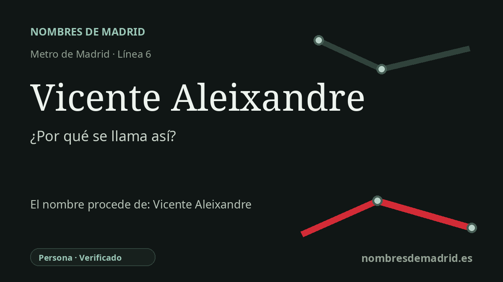

Publicado el · Investigación de Nombres de Madrid · Cómo verificamos cada origen · 8 fuentes consultadas
Respuesta rápida
Llamada desde 2018 por Vicente Aleixandre, poeta de la Generación del 27 y premio Nobel que vivió en la cercana Velintonia. El nombre anterior, Metropolitano, se eliminó en parte para evitar confusiones con Estadio Metropolitano, en la línea 7.
La historia del nombre
La estación lleva el nombre de Vicente Aleixandre, una de las figuras centrales de la Generación del 27. Metro de Madrid abrió esta parada de la línea 6 en 1987 con el nombre de Metropolitano, pero la Comunidad de Madrid anunció en noviembre de 2018 que pasaría a llamarse Vicente Aleixandre desde el inicio del servicio del 1 de diciembre de 2018.
El motivo era claramente local. Aleixandre vivió a poca distancia de la estación, en la actual calle Vicente Aleixandre 3, en la casa conocida como Velintonia. La explicación oficial añadía que el cambio ayudaba a evitar la confusión con Estadio Metropolitano, la estación de la línea 7 asociada al estadio del Atletico de Madrid.
Aleixandre nació en Sevilla en 1898, pasó parte de su infancia en Malaga y convirtió Madrid en su gran espacio literario. Fue elegido académico de la Real Academia Espanola en 1949, tomó posesión del sillón O en 1950 y recibió el Premio Nobel de Literatura en 1977. Su obra contribuyó a renovar la poesía española de entreguerras y lo convirtió en referencia para generaciones posteriores.
La casa cercana añade una capa importante al nombre de la estación. Aleixandre se instaló allí en 1927, cuando la calle se llamaba oficialmente Wellingtonia; en sus cartas fue castellanizando el nombre como Velintonia, denominación que acabó identificando a la propia vivienda. Velintonia no fue solo una casa privada, sino un lugar de encuentro para poetas del 27 y para escritores más jóvenes después de la Guerra Civil.
El antiguo nombre de la estación, Metropolitano, pertenecía a otra historia urbana de esta zona de Madrid: el área fue urbanizada por la Compania Urbanizadora Metropolitana, vinculada al primer entorno empresarial del Metro. El cambio de 2018 no borró del todo esa memoria, porque los vestíbulos aún conservan la denominación Metropolitano en la información de transporte, pero el nombre público actual pone en primer plano al poeta y su dirección madrileña. La etimología está, por tanto, bien documentada, con la corrección principal de que el cambio fue una decisión local y de orientación, no simplemente parte de un programa general para homenajear artistas.